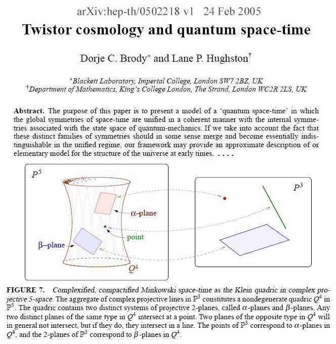
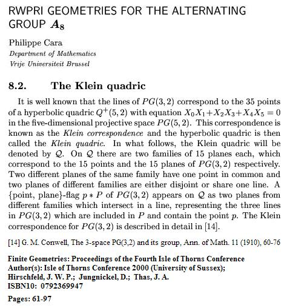

| Finite
Geometry Notes |
|

|
G. M. Conwell, The 3-space PG(3,2) and its group, Ann. of Math. 11, 60-76.
Conwell discusses the quadric, and the related Klein correspondence, in detail. This is noted in a more recent paper by Philippe Cara:
|

|
| Edge on Heptads Part I: Dye on Edge "Summary: ....we obtain various orbits of partitions of quadrics over GF(2a) by their maximal totally singular subspaces; the corresponding stabilizers in the relevant orthogonal groups are investigated. It is explained how some of these partitions naturally generalize Conwell's heptagons for the Klein quadric in PG(5,2)." "Introduction: In 1910 Conwell... produced his heptagons in PG(5,2) associated with the Klein quadric K whose points represent the lines of PG(3,2).... Edge... constructed the 8 heptads of complexes in PG(3,2) directly. Both he and Conwell used their 8 objects to establish geometrically the isomorphisms SL(4,2)=A8 and O6(2)=S8 where O6(2) is the group of K...." -- "Partitions and Their Stabilizers for Line Complexes and Quadrics," by R.H. Dye, Annali di Matematica Pura ed Applicata, Volume 114, Number 1, December 1977, pp. 173-194 Part II: Edge on Heptads "The Geometry of the Linear Fractional Group LF(4,2)," by W.L. Edge, Proc. London Math Soc., Volume s3-4, No. 1, 1954, pp. 317-342. See the historical remarks on the first page. Note added by Edge in proof: "Since this paper was finished I have found one by G. M. Conwell: Annals of Mathematics (2) 11 (1910), 60-76...." |
Part I--
From "Twistor cosmology and quantum space-time," by Dorje C. Brody (Imperial College, London) and Lane P. Hughston (King's College London):
FIGURE 7. Complexified, compactified Minkowski space-time as the Klein quadric in complex projective 5-space. The aggregate of complex projective lines in P3 constitutes a nondegenerate quadric Q4 in P5. The quadric contains two distinct systems of projective 2-planes, called alpha-planes and beta-planes. Any two distinct planes of the same type in Q4 intersect at a point. Two planes of the opposite type in Q4 will in general not intersect, but if they do, they intersect in a line. The points of P3 correspond to alpha-planes in Q4, and the 2-planes of P3 correspond to beta-planes in Q4.
Published in XIX Max Born Symposium, Wroclaw
(Poland), 28 September
Part II--
From "RWPRI Geometries for the alternating group A8," by Philippe Cara, Department of Mathematics, Vrije Universiteit Brussel
8.2. The Klein quadricIt is well known that the lines of PG(3,2) correspond
to the 35 points of a hyperbolic quadric Q+(5,2)
with equation
[14] G. M. Conwell, The 3-space PG(3,2) and its
group, Ann. of Math. 11 (1910), pp. 60-76
Published in Finite
Geometries: Proceedings of the Fourth Isle of Thorns Conference
(July 2000), Springer, 2001, ed. Aart
Blokhuis, James W. P. Hirschfeld, Dieter Jungnickel, and Joseph A.
Thas, pp. 61-97
{kind=link}
{kind=link}